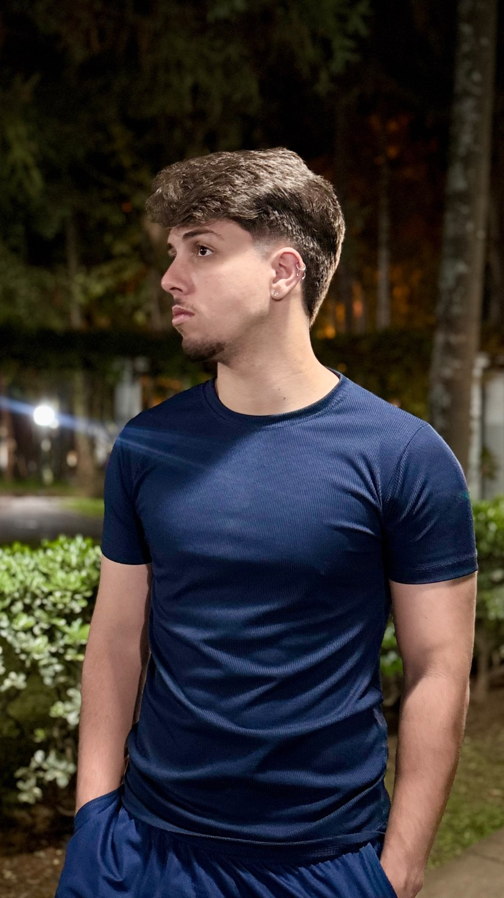

DESENVOLVEDOR FULL STACK
Pedro
Fernandes.
Curiosidade para explorar.
Código para construir.
Estudante de Ciência da Computação na UNIFAL-MG, conectando o aprendizado da faculdade ao interesse por desenvolvimento e resolução de problemas.

PEDRO FERNANDES / FULL STACK
01 / Sobre mim
Sobre mim
Entre ideias,
estudos e código.
Sou Pedro Fernandes, desenvolvedor Full Stack e estudante de Ciência da Computação na Universidade Federal de Alfenas. Ingressei em 2026 e estou no segundo período do curso.
Gosto de HTML, CSS e Java, e de enfrentar problemas que podem ser resolvidos com programação. Ainda estou explorando as áreas da computação para descobrir quais caminhos quero seguir.
Também sou sócio de uma empresa, uma experiência que faz parte da minha trajetória além da tecnologia.
02 / Conhecimentos
Conhecimentos
Uma base em desenvolvimento, construída com estudo e prática. Já tive contato com todas estas tecnologias e sigo aprendendo sobre cada uma delas.
01
HTML & CSS
Estrutura e apresentação de páginas web.
02
C & C++
Programação e resolução de problemas.
03
Java
Aprendizado e prática de programação.
04
LaTeX
Preparação e organização de documentos.
03 / Projeto em destaque
Projeto em destaque
PROJETO ACADÊMICO / ICC
LIVROS
IDEIAS
HISTÓRIAS
LIVRARIA
01 / DESENVOLVIMENTO WEB
Site de livraria
Um site desenvolvido para um trabalho de ICC na UNIFAL-MG. A proposta da atividade era criar um site sobre um produto de nossa escolha; escolhi o tema de uma livraria.
O projeto faz parte da minha trajetória de aprendizado em desenvolvimento web.
04 / Além do código
Além do código
Os interesses que também fazem parte de quem eu sou.
01
Videogames e jogos de tabuleiro
Gosto tanto de videogames quanto de jogos de tabuleiro. São duas formas de diversão que fazem parte dos meus interesses.
02
Academia
Gosto bastante de treinar e de dedicar parte do meu tempo à academia.
03
Desafios de programação
Tenho interesse em resolver problemas que exigem código e em pensar em maneiras de chegar a uma solução.
04
Histórias em quadrinhos
Ler HQs é um dos meus passatempos e uma forma de explorar diferentes histórias.
05
Inteligência artificial
Gosto de explorar as capacidades das IAs, experimentar ferramentas e entender o que cada uma pode fazer.
05 / Formação
Formação
2026 — EM ANDAMENTO
Ciência da Computação
Universidade Federal de Alfenas · UNIFAL-MG
Alfenas, MG · Segundo período
2023 — 2025
Técnico em Edificações
IFSULDEMINAS · Campus Muzambinho
Muzambinho, MG
06 / Contato
Contato
Vamos nos conectar?
Você pode conhecer meus repositórios e acompanhar meus projetos pelo GitHub.
LOCALIZAÇÃO · Areado, Minas Gerais